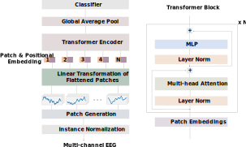

Sleep is particularly important to the health of infants, children, and adolescents, and sleep scoring is the first step to accurate diagnosis and treatment of potentially life-threatening conditions. But pediatric sleep is severely under-researched compared to adult sleep in the context of machine learning for health, and sleep scoring algorithms developed for adults usually perform poorly on infants. Here, we present the first automated sleep scoring results on a recent large-scale pediatric sleep study dataset that was collected during standard clinical care. We develop a transformer-based model that learns to classify five sleep stages from millions of multi-channel electroencephalogram (EEG) sleep epochs with 78% overall accuracy. Further, we conduct an in-depth analysis of the model performance based on patient demographics and EEG channels. The results point to the growing need for machine learning research on pediatric sleep.
 Model Architecture |
We utilize the NCH SleepBank dataset, which comprises approximately 3.6 million fully-annotated EEG examples by domain experts, for training and evaluating models. Only seven-channel EEG signals (F4-M1, O2-M1, C4-M1, O1-M2, F3-M2, C3-M2, and CZ-01) at 128 Hz are used to classify instances into five sleep stages (i.e., wakefulness, non-REM stages 1, 2, 3, REM).
Our model achieves 78.2% accuracy, F1-score (macro) of 70.5%, F1-score (weighted) of 79.9%, and Cohen's Kappa score of 71.0. Model performance for each sleep stage is presented as a normalized confusion matrix, and in terms of accuracy, precision, recall, and F1-score. The model demonstrates strong predictive power (near 80%) for Wake, N2, N3, and REM, but not as much in predicting N1, which has the smallest sample size.
Confusion Matrix | Performance Metrics |
t-SNE embedding of features learned with the transformer network. | |
For a random subset of test set instances, we project 128-dimensional representations from the model's penultimate layer to 2 dimensions using t-SNE.
To learn more, read our publication presented at the Learning from Time Series for Health Workshop at NeurIPS 2022.
Lee, Harlin, and Aaqib Saeed. "Automatic Sleep Scoring from Large-scale Multi-channel Pediatric EEG." arXiv preprint arXiv:2207.06921 (2022).
@article{lee2022pediatric,
title={Automatic Sleep Scoring from Large-scale Multi-channel Pediatric EEG},
author={Lee, Harlin and Saeed, Aaqib},
journal={arXiv preprint arXiv:2207.06921},
year={2022}
}